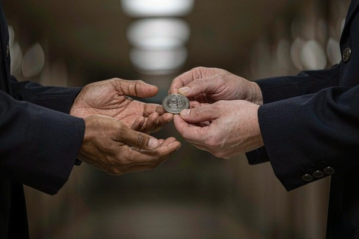
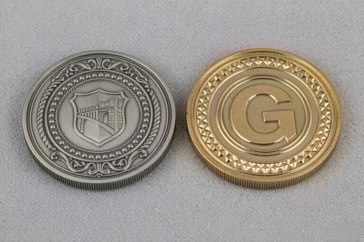

A One-Sentence Definition
Here is the shortest honest version: a challenge coin is a small metal token, usually 1.5 to 3 inches across, bearing an organization's emblem on one side and identifying details on the other, produced for a specific occasion and given to people as recognition of membership or service.
Break that sentence apart and you get the four things every challenge coin has, whether it was struck for a bomber squadron in 1944 or for a software company's five-year anniversary last month:
- It is small. Most run 1.5 to 3 inches in diameter, with a typical thickness of 2.5 to 3 mm. A coin you can close your fist around is a coin that fits in a pocket and survives a wallet. Our coin size guide breaks down how each diameter changes what you can put on the design.
- It is round and metal. Usually a zinc alloy, brass, or copper base, plated to look like silver, gold, bronze, or copper. Custom shapes exist, but the round coin is the form that carries the tradition.
- It carries an emblem. A unit badge, a company logo, a department seal, a club crest. The emblem is the point of the whole object, and it is what makes the coin a challenge coin rather than a souvenir.
- It was given, not bought. The coin exists because something happened. A deployment ended, a member retired, a unit marked an anniversary, a team hit a milestone. The coin is a receipt for that event, and that is why it carries a value that has nothing to do with metal.
What a challenge coin is not: currency. It has no face value, no denomination, no issuing nation, and no purchasing power. It is not legal tender and it cannot be spent. Collectors pay real money for rare historical examples, but a freshly struck coin is worth exactly what it cost to make, and its actual worth lies in what it reminds the person carrying it about.
Where the Tradition Came From
The custom grew up inside military units, and the mechanism behind it was practical. A service member carried a badge or a pin, and when that person moved on, transferred, or left the unit, the badge was handed up to a senior member in exchange for a coin. The badge was the unit's, and the coin became the proof that the transaction happened. In other words, the challenge coin began as a receipt, and it stayed a receipt for belonging ever since.
The story everyone repeats involves a captured pilot who was given a medallion by his family, hid it in his clothing to stay out of a prisoner-of-war camp, and was searched, only for the medallion to save him from being executed as a spy. Versions differ on the unit, the medal, and how the search turned up, and honest historians treat the details as folklore layered over a real wartime practice. Our guide to challenge coin etiquette covers this origin story in more depth, along with how the custom spread from aviation units into the wider military and then out into police departments, fire departments, and the corporate world.
What survived that long journey is not the medal story but the exchange. When a member leaves, someone else takes the coin and the badge passes along with it. That is the living part of the tradition, and it is why units still run a coin check at the bar rather than trading a phone number or a LinkedIn connection.

What Coins Are Used For Today
The ceremonies changed; the mechanic did not. A challenge coin still gets struck when something happened, and it still gets handed to the people who were there. What follows is the list of reasons that actually come up, in roughly the order they are asked about.
- Deployment and redeployment. The oldest reason. Coins mark the end of a rotation, the start of one, or a unit's return from somewhere. The designs often carry the location and the dates.
- Joining and leaving. New members receive a coin from the unit; departing members pass theirs along, and the coin gets handed to the person who replaces them.
- Promotion, awards, and commendations. A coin paired with a medal or a certificate carries the specific event on its back, so it becomes a keepsake rather than a generic emblem.
- Unit anniversaries and reorganizations. A numbered run, often with the year or the unit's history on the reverse.
- First responders. Police and fire departments use coins for memorials, for commendations, and for the anniversaries of incidents their members do not talk about. These runs are often the most restrained designs in the hobby, and the reason is worth reading about in the etiquette guide.
- Corporate and club milestones. Anniversaries, launch events, conference attendance, sales targets, a team shipping a product. A lot of modern coin orders come from companies, and the rules are looser because there is no unit to enforce them.
- Personal and family occasions. Weddings, graduations, anniversaries, memorial keepsakes for a parent who served. These are the least conventional and often the most personal.
One rule runs through all of them: the more formal the occasion, the less casually the coin gets handed out. A coin given at a bar on a Friday night and a coin given at a funeral for a fallen colleague are made the same way, but the second one carries weight that the first one never will. That distinction is the whole reason the tradition survives.
Anatomy of a Coin: Front, Back, Edge, Plating
Every challenge coin has four faces, and each one does a different job. Knowing which is which is the fastest way to understand why a design gets laid out the way it does.
- Front, called the obverse. This carries the emblem. It is the side a coin check reveals first, because the whole point of the check is confirming which unit you belong to, so the emblem has to be identifiable in half a second. That means a bold, high-contrast mark rather than a detailed illustration. Our artwork guide covers what actually survives at this size.
- Back, called the reverse. This is where the specifics go: unit name, year, serial number, motto, deployment location, or a quote. This is the side that makes one coin different from the next, and it is why identical-looking coins from the same run often have different reverse details.
- The edge. Plain, reeded, rope, cross-cut, or custom with your logo cut into it. The edge is the only part of the coin a person touches without looking at it, which makes it the most underrated design decision on the whole piece. We compare the options in detail in our guide to coin edge types.
- The surface. Plating and finish together decide how the coin reads in the hand. Antique gold, brushed silver, matte black, mirror minted, or a two-tone split. The plating and finishes guide covers how thin or thick each option should be and how long it holds up.
Color comes on top of all that, either as soft enamel that sits recessed with a tactile texture, or hard enamel that is fired, ground flat, and polished flush with the metal. The soft versus hard enamel comparison breaks down the difference in feel, cost, and how each one ages.
Add weight and you have the full object. Coins are usually specified in ounces rather than grams, because that is how the sizing conversation happens with most buyers. The manufacturing side of all of this is covered step by step in how challenge coins are made.

How Coins Differ From Medals, Tokens, and Medallions
These four get mixed up constantly, and the mix-up usually happens because all four are metal, all four are round, and all four are handed out at a ceremony. They are not the same object, and the differences are practical enough that picking the wrong one means the wrong purchase.
The distinction that causes the most confusion in practice is coin versus medallion. A medallion is the bigger, heavier, more formal relative: it is what you commission when the event deserves something that reads as a keepsake on a shelf rather than an item in a pocket. If your event is a unit anniversary, a medallion might be the right call. If it is a welcome gift for thirty people at a conference, a coin is right, and a medallion at that size would be expensive, heavy, and slightly absurd in a good way.
Coin versus medal is a question of purpose rather than budget. If the metal is recognizing an achievement that lives on a uniform, it is a medal. If it is welcoming someone into a group they now belong to, it is a coin. Medal hangers, ribbons, and formal award protocols do not exist for coins, which is exactly why a coin can be handed across a bar without anybody standing up.
The one warning worth giving: do not let a supplier decide this for you. If you describe "a coin for our 25th anniversary" to a vendor who only makes medallions, you will get a medallion quote, and you will find out at the sample stage. State the size, the quantity, the budget per piece, and whether it gets worn or displayed, and the right product becomes obvious. If you are still unsure how many you need, start with the minimum order guide, since quantity is the single number that drives both cost and the size of the run you are committing to.
Ready to Order Your First Run?
Send us your emblem or logo and we will come back with a free digital proof in 12 hours, plus a recommendation on size, finish, and quantity based on how you plan to hand the coins out.
Get Free QuoteFrequently Asked Questions
What is a challenge coin in simple terms?
A challenge coin is a small, round metal token, usually 1.5 to 3 inches across, that carries the emblem of an organization on one side and identifying details such as a unit name, number, or year on the other. It is produced as part of a ceremony or an event and given to members to mark membership, service, or recognition.
How big is a standard challenge coin?
Most challenge coins fall between 1.5 and 3 inches in diameter. A 1.5 to 2 inch coin fits comfortably in a pocket and is the most common everyday size, 2.5 inches is the standard for a presentation-grade run, and 3 inches or larger is a display piece. Typical thickness is 2.5 to 3 mm, with 3D designs running deeper.
Where did challenge coins come from?
The tradition grew out of military units where a member's badge or insignia was given up in exchange for a coin. The early custom was to hand the badge to a senior member and receive a coin in return, which is how the coins came to function as proof of membership. The most repeated anecdote involves a captured pilot whose medallion identified him, though the details vary between tellings.
Why is it called a challenge coin?
Because of the coin check. When two members meet and one does not recognize the other, the second can challenge the first to produce a coin as proof of who they are, and the challenge is answered by the coin. The coin is not challenged itself; it is the answer to a challenge, which is why the term stuck to the coin itself.
What happens during a coin check?
One member challenges the other to produce a coin. If the challenged member can produce one, the check is answered and the challenge goes no further. If they cannot, the group decides the consequence, which in most units means buying a round for the unit. The exchange of a coin is also how a coin passes between members when one retires, transfers, or leaves the organization.
Are challenge coins money or legal tender?
No. Challenge coins have no face value, no denomination, and no issuing country, so they are not legal tender and hold no monetary value. Their worth is entirely sentimental and symbolic, which is why collectors pay for rare historical examples while newly struck coins are worth only what they cost to make.
How are challenge coins different from medals?
A medal is worn, usually on a ribbon or with a loop, and marks an official award or rank. A challenge coin is carried, usually in a pocket or on a chain, and marks membership or belonging. Medals also tend to be larger and more formal, while coins are small enough to hand out in bulk at a single ceremony.
Can anyone order challenge coins?
Yes. Units, fire departments, police departments, companies, clubs, and families all order them. The only real requirements are that you have a logo or emblem to put on the coin and a reason for handing them out, because a challenge coin without an organization behind it is just a decorated metal disc.